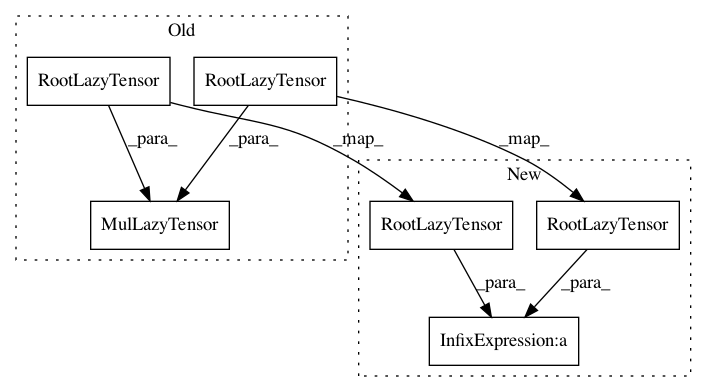

e95aef6716ee8b2e0b647468ffe7f5bf37d4ce47,test/lazy/test_mul_lazy_tensor.py,TestMulLazyTensor,create_lazy_tensor,#TestMulLazyTensor#,18
Before Change
def create_lazy_tensor(self):
mat1 = make_random_mat(6, 3)
mat2 = make_random_mat(6, 3)
res = MulLazyTensor(RootLazyTensor(mat1), RootLazyTensor(mat2))
return res.add_diag(torch.tensor(2.0))
def evaluate_lazy_tensor(self, lazy_tensor):
diag_tensor = lazy_tensor._diag_tensor.evaluate()
After Change
def create_lazy_tensor(self):
mat1 = make_random_mat(6, 3)
mat2 = make_random_mat(6, 3)
res = RootLazyTensor(mat1) * RootLazyTensor(mat2)
return res.add_diag(torch.tensor(2.0))
def evaluate_lazy_tensor(self, lazy_tensor):
diag_tensor = lazy_tensor._diag_tensor.evaluate()
In pattern: SUPERPATTERN
Frequency: 3
Non-data size: 6
Instances
Project Name: cornellius-gp/gpytorch
Commit Name: e95aef6716ee8b2e0b647468ffe7f5bf37d4ce47
Time: 2019-03-18
Author: gpleiss@gmail.com
File Name: test/lazy/test_mul_lazy_tensor.py
Class Name: TestMulLazyTensor
Method Name: create_lazy_tensor
Project Name: cornellius-gp/gpytorch
Commit Name: e95aef6716ee8b2e0b647468ffe7f5bf37d4ce47
Time: 2019-03-18
Author: gpleiss@gmail.com
File Name: test/lazy/test_mul_lazy_tensor.py
Class Name: TestMulLazyTensorBatch
Method Name: create_lazy_tensor
Project Name: cornellius-gp/gpytorch
Commit Name: e95aef6716ee8b2e0b647468ffe7f5bf37d4ce47
Time: 2019-03-18
Author: gpleiss@gmail.com
File Name: test/lazy/test_mul_lazy_tensor.py
Class Name: TestMulLazyTensorMultiBatch
Method Name: create_lazy_tensor